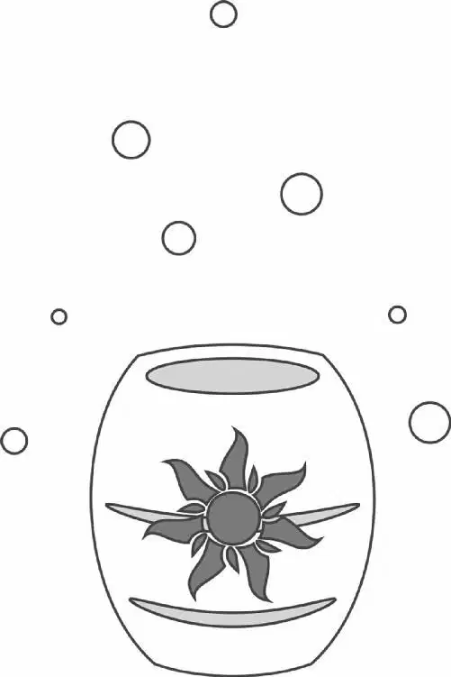

As the sun rose over their little campsite, Flynn Rider was fast asleep. He didn’t notice that Maximus had finally found him. Again. Maximus glared down at the sleeping man, wondering what he should do to him first.
The horse had galloped, swum, and scrambled up and down mountains, falling and picking himself up again, utterly exhausting himself trying to hunt Flynn down. And now the big horse had him. Maximus nipped at Flynn’s sleeve as Flynn jumped to his feet.
Rapunzel awoke to a scream. The tenacious horse now had hold of Flynn’s foot and was dragging him away!
Astonished at the sight, Rapunzel tried to help, grabbing Flynn’s arms. Soon Rapunzel and Maximus were engaged in a tug-of-war with Flynn stretched between them.
“Don’t worry, Blondie!” Flynn said, trying to sound as if he were in control. “I’ve got him right where I want him!”
“Give me him!” Rapunzel ordered Maximus. She and the horse were pulling Flynn in opposite directions when Flynn wiggled his foot out of the boot in Maximus’s mouth. Flynn scrambled away. Maximus charged after him.
Rapunzel stepped in front of the horse. “Whoa, boy,” she said softly. “Easy.”
She took hold of the horse’s bridle and whispered, “Easy, boy. Shhh. Whoa, boy.”
Maximus looked at Rapunzel. She cared!
Peeking out from Rapunzel’s hair, Pascal watched in awe as she tamed the horse.
“That’s it,” Rapunzel said sweetly. “Now sit.” Maximus hesitated. But Rapunzel looked him in the eye and said again, “Sit.”
This time Maximus sat. It felt good. He had been racing and hunting and sniffing and falling over cliffs for days now! Rapunzel smiled. “You’re such a good boy,” she said, patting the horse’s neck. “Yes, you are. Now drop the boot.”
The boot instantly fell from the horse’s mouth. Rapunzel patted him gently. “Oh, look at you, all wet and tired. Are you tired from chasing this bad man all over the place?”
Maximus had always thought that women had a gentler touch than men when it came to caring for horses.
“Nobody appreciates you, do they?” she asked kindly.
Flynn was shocked. She was taking sides — the wrong side! “What? You’re kidding me,” he said, putting his boot back on.
But Rapunzel ignored Flynn and kept talking to the horse. “Yes, you are tired, and nobody appreciates you, do they? Do they?” The horse neighed, and Rapunzel nodded sympathetically.
“Oh, come on!” Flynn said impatiently. “He’s a bad horse!”
Rapunzel just shrugged the comment off. “Oh, he’s nothing but a big sweetheart,” she said. She read the name printed on the horse’s bridle and smiled. “Isn’t that right, Maximus?”
Flynn rolled his eyes. “You’ve got to be kidding me.” Then he cringed just a bit. He wondered, Am I actually jealous of a horse?Ugh!
Rapunzel looked into the horse’s big eyes and explained everything very sweetly to him. “Today is the biggest day of my life,” she said. Maximus nodded. “And the thing is, I want you not to get Flynn arrested. Just for twenty-four hours, and then you can chase each other to your hearts’ content. Okay?” Rapunzel paused. “And it’s also my birthday — just so you know.”
The horse whinnied and shook his big head as if to say everything was okay. But he was only doing this for Rapunzel.
Carefully, Rapunzel guided Maximus and Flynn together. She wanted them to shake hoof and hand in a truce. Man and horse glared at each other angrily. They could not stand each other.
The horse snorted and finally raised his hoof. Flynn grudgingly reached out to shake it. He was only doing this for Rapunzel.
“Oof!” Flynn felt the hoof bypass his hand and punch him in the gut. So much for starting a truce the nice way, Flynn thought.
It was the beginning of a perfect day, Rapunzel thought. And just when she was sure it couldn’t get any better, the bells of the kingdom began to ring in the distance.
Rapunzel darted to the crest of a nearby hill, following the sound of the bells.
In front of her lay a kingdom that was more beautiful than anything she could ever have imagined. Bordered by a body of crystal-blue water, an elegant castle sparkled in the sun, flags flying from its many spires. A village of lovely stone and wood cottages and small bridges nestled at its base.
Rapunzel turned and smiled at Flynn. She couldn’t wait. Today she would visit the kingdom — and later see those lights at last.
